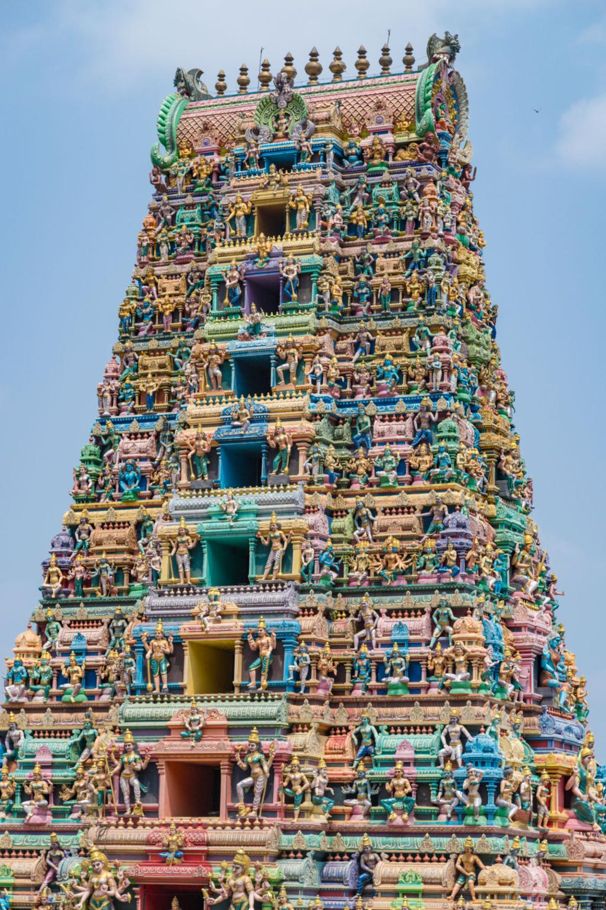

Vijayawada
Discover the vibrant city of Vijayawada, a destination where spirituality, history, and urban life blend beautifully along the banks of the Krishna River. The city is best known for the revered Kanaka Durga Temple situated atop Indrakeeladri Hill, offering both spiritual significance and panoramic views of the surrounding landscape. Landmarks like the Prakasam Barrage stretching across the river and the ancient Undavalli Caves showcase the region’s architectural and historical richness. The lively streets, bustling markets, and cultural atmosphere reflect the energetic spirit of the city. Surrounded by scenic hills and riverfront beauty, Vijayawada provides visitors with a captivating mix of devotion, heritage, and modern vibrancy.